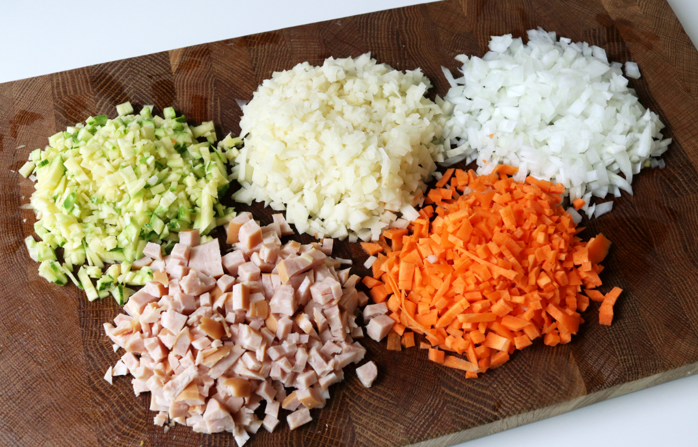

Recipe

김치볶음밥
냉장고 속 묵은 김치 하나로 뚝딱 — 자취생 최애 15분 한 끼
Ingredients
재료
주재료
찬밥
1공기 약 200g
김치
80g 잘 익은 것
계란
1개
대파
10cm 없으면 생략 가능
양념
식용유
1큰술
간장
½큰술
고춧가루
½작은술 기호에 따라
참기름
½작은술 마무리용
소금·후추
약간씩

Directions
만드는 법
-
01
김치를 잘게 썬다. 1분 가위로 그릇 안에서 바로 잘라도 OK. 큼직하면 볶을 때 수분이 많이 나오므로 2cm 이하로.
-
02
팬을 강불로 달구고 식용유를 두른 뒤 김치를 볶는다. 2분 김치 수분이 날아가고 기름이 붉게 물들 때까지 볶아야 구수한 맛이 난다.
-
03
찬밥을 넣고 간장·고춧가루를 더해 볶는다. 3분 밥알을 눌러 덩어리를 풀면서 볶는다. 쌀 하나하나에 기름이 입혀지면 OK.
-
04
대파를 넣고 30초 더 볶은 뒤 소금·후추로 간한다. 1분 대파는 마지막에 넣어야 향이 살아있다. 간은 김치 짠맛을 먼저 확인하고 조절.
-
05
볶음밥을 한쪽으로 밀고 빈 공간에 계란 프라이를 만든다. 2분 반숙으로 노른자를 살려야 비벼 먹을 때 더 맛있다. 뚜껑을 30초 덮으면 쉽게 반숙 완성.
-
06
불을 끄고 참기름을 두른 뒤 그릇에 담아낸다. 30초 참기름은 반드시 불 끄고 넣어야 향이 날아가지 않는다. 김 가루나 통깨를 뿌리면 더욱 완성도 UP.
Substitute
재료 대체
찬밥 대신
즉석밥
전자레인지에 1분 데운 뒤 사용. 볶을 때 수분을 더 날려줄 것.
김치 대신
김치볶음통조림
편의점·마트에서 구입 가능. 양념이 돼있어 간장은 생략.
계란 대신
참치캔
기름 뺀 참치를 김치와 함께 볶으면 단백질 보충 + 감칠맛 UP.
대파 대신
쪽파 / 양파
양파는 처음부터 넣어 충분히 볶아야 단맛이 난다.
식용유 대신
버터
버터 1/2큰술을 더하면 고소함이 배가된다. 강불에서 타지 않게 주의.
참기름 대신
들기름
고소하고 구수한 향이 더 강하게 난다. 같은 양으로 대체 가능.